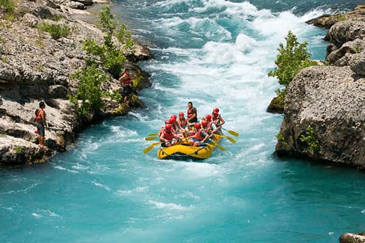

Nossa missão é proporcionar experiências emocionantes e seguras em contato com a natureza. Cada aventura é uma oportunidade de superar desafios, criar novas amizades e guardar momentos inesquecíveis. Nossa equipe trabalha para oferecer segurança, diversão e um atendimento acolhedor.